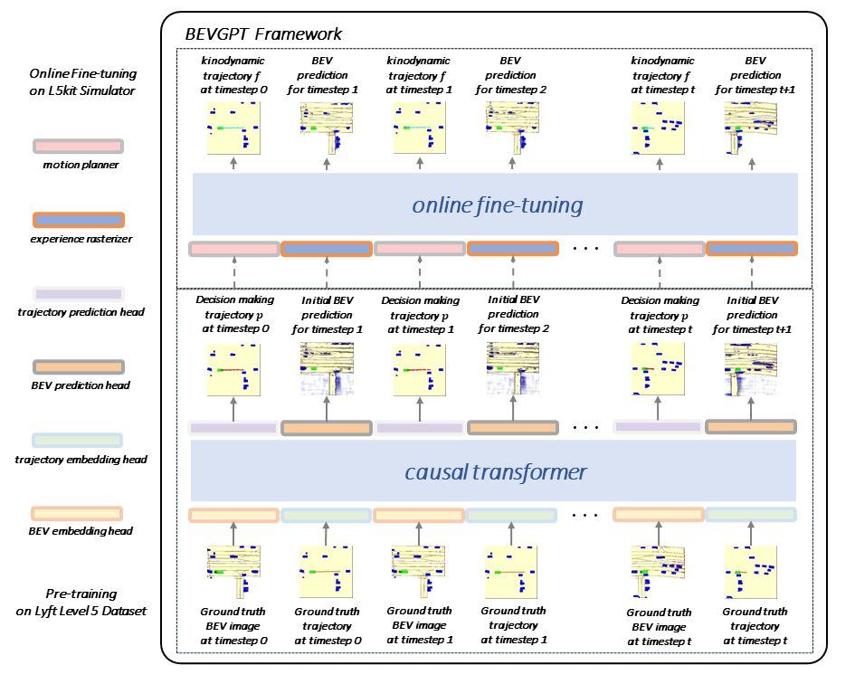
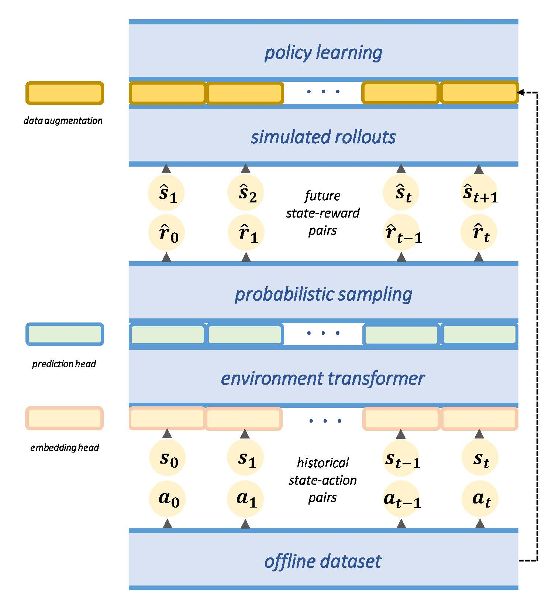
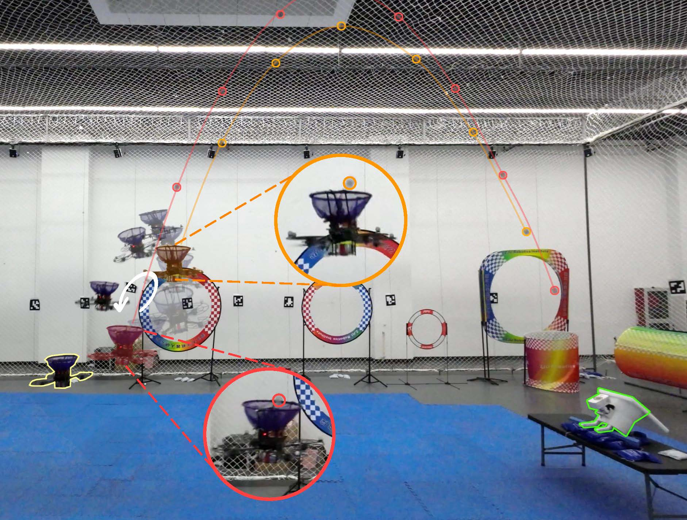

|
Pengqin Wang 王鹏钦
I am a Ph.D. candidate in HKUST Aerial Robotics Group,
under the supervision of Prof. Shaojie Shen and Prof. Jun Ma.
My research involves Robotics, Autonomous Driving, Foundation Model, Reinforcement Learning, and Decision-Making.
I received my B.Eng. degree from Shandong University,
where I studied at Chongxin College(崇新学堂) and worked with Prof. Bin Zhou
on mobile robots.
pwangas [at] connect (dot) ust (dot) hk
[Google Scholar] [ORCID]
[ResearchGate]
|
|
|
News
[09/25/2024] We are launching a [Research Topic] on Frontiers in Robotics and AI!
[08/20/2024] Our paper about [BEVGPT] is accepted by T-IV!
[06/30/2024] Our paper about [Environment Transformer] is accepted for IROS 2024 as Oral Presentation!
[06/26/2024] I was invited to give a [Talk] to Shenlanxueyuan!
[10/27/2023] Our paper about [FollowNet] is accepted by Scientific Data!
[06/27/2023] Our paper about [Bat Planner] is accepted by RA-L!
[06/12/2023] My Ph.D. Qualifying Examination has been passed. I have become a Ph.D. candidate!
[06/02/2023] Our paper about [Catch Planner] is accepted by TMECH!
|
|

|
BEVGPT: Generative Pre-trained Foundation Model for Autonomous Driving Prediction, Decision-Making, and Planning
Pengqin Wang, Meixin Zhu, Xinhu Zheng, Hongliang Lu, Hui Zhong, Xianda Chen, Shaojie Shen, Xuesong Wang, Yinhai Wang, Fei-Yue Wang
T-IV
TRB 2024
#Autonomous_Driving
[paper]
[talk]
|
|

|
Environment Transformer and Policy Optimization for Model-Based Offline Reinforcement Learning
Pengqin Wang, Meixin Zhu, Shaojie Shen
IROS 2024 (Oral)
#Offline_RL
[paper]
|
|

|
Catch Planner: Catching High-Speed Targets in the Flight
Huan Yu*, Pengqin Wang*, Jin Wang, Jialin Ji, Zhi Zheng, Jie Tu, Guodong Lu, Jun Meng, Meixin Zhu, Shaojie Shen, Fei Gao
TMECH
#Motion_Planning #RL
[paper] [videoYouTube]
[videoBilibili]
|
|
|
BEVGPT: Autonomous Driving Pre-trained Foundation Model
#Autonomous_Driving
[page]
|
|
|
INTR5130 (L01) - Traffic Control and Simulation
Teaching assistant, Fall 2024
[course page]
|
|
|
INTR6000E (L1) - Traffic System Control and Simulation
Teaching assistant, Fall 2022
[course page]
|
|
|
Reviewer for T-IV, RA-L, NEUCOM, G-ITS, IROS, ICRA
Topic Coordinator for Frontiers in Robotics and AI
|
|